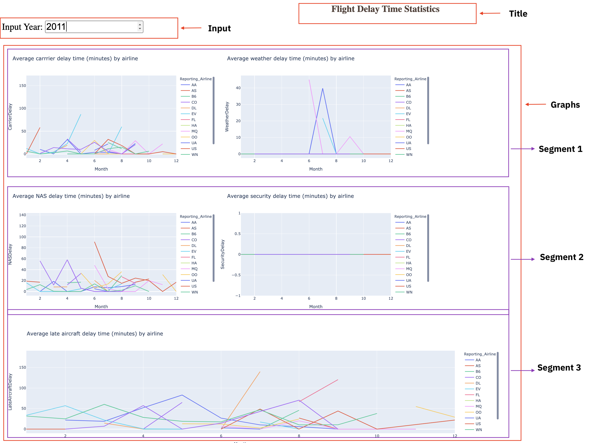
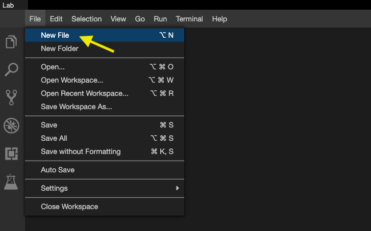
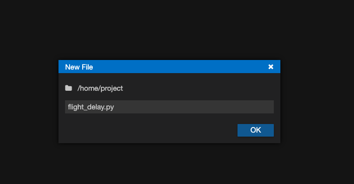
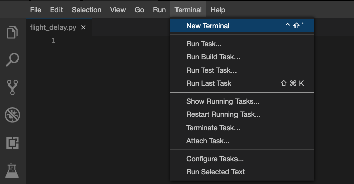
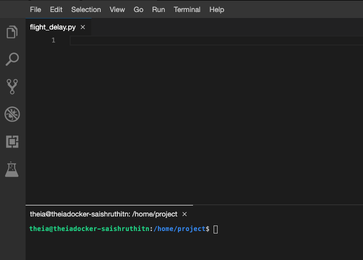
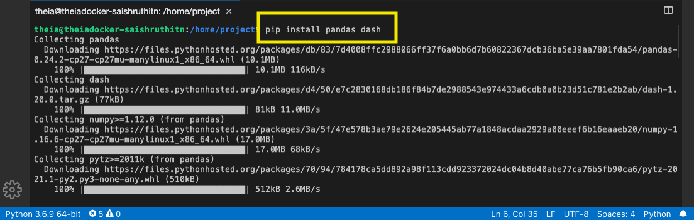
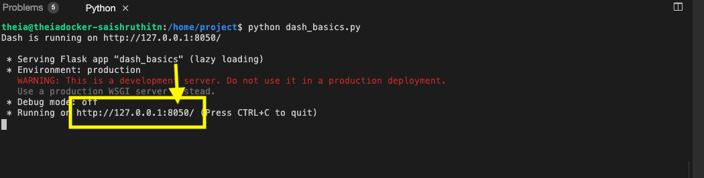
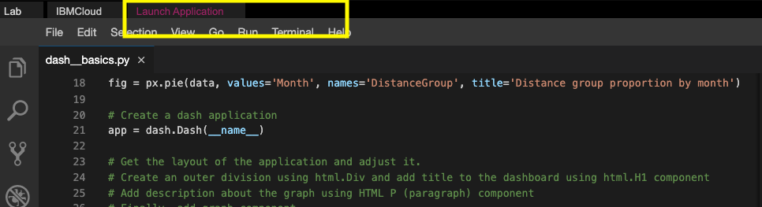
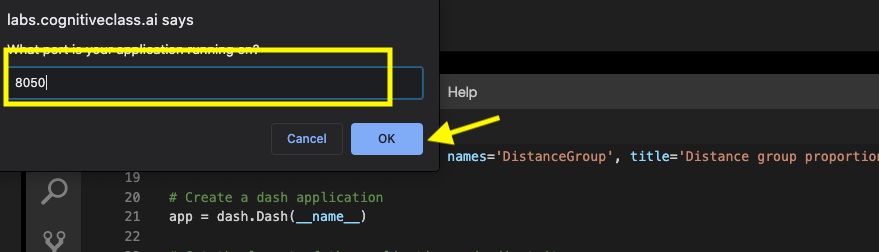

After completing the lab you will be able to:
Estimated time needed: 30 minutes
Airline Reporting Carrier On-Time Performance dataset from Data Asset eXchange
This Skills Network Labs Cloud IDE (Integrated Development Environment) provides a hands-on environment in your web browser for completing course and project related labs. It utilizes Theia, an open-source IDE platform, that can be run on desktop or on the cloud. So far in the course you have been using Jupyter notebooks to run your python code. This IDE provides an alternative for editing and running your Python code. In this lab you will be using this alternative Python runtime to create and launch your Dash applications.
Please be aware that sessions for this lab environment are not persisted. When you launch the Cloud IDE, you are presented with a 'dedicated computer on the cloud' exclusively for you. This is available to you as long as you are actively working on the labs.
Once you close your session or it is timed out due to inactivity, you are logged off, and this 'dedicated computer on the cloud' is deleted along with any files you may have created, dowloaded or installed. The next time you launch this lab, a new environment is created for you.
If you finish only part of the lab and return later, you may have to start from the beginning. So, it is a good idea to plan to your time accordingly and finish your labs in a single session.
Analyze flight delays in a dashboard.
NOTE: Year range should be between 2010 and 2020
Below is the expected result from the lab. Our dashboard application consists of three components:


flight_details.py


cmake
pip3 install pandas dash

Let's start with
Copy the below code to the flight_delay.py script and review the code.
elm
# Import required libraries
import pandas as pd
import plotly.graph_objects as go
import dash
import dash_html_components as html
import dash_core_components as dcc
from dash.dependencies import Input, Output
# Read the airline data into pandas dataframe
airline_data = pd.read_csv('https://cf-courses-data.s3.us.cloud-object-storage.appdomain.cloud/IBMDeveloperSkillsNetwork-DV0101EN-SkillsNetwork/Data%20Files/airline_data.csv',
encoding = "ISO-8859-1",
dtype={'Div1Airport': str, 'Div1TailNum': str,
'Div2Airport': str, 'Div2TailNum': str})
Next, we create a skeleton for our dash application. Our dashboard application layout has three components as seen before:
Mapping to the respective Dash HTML tags:
html.H1() taghtml.Div() and input component added using dcc.Input() tag inside the layout division.html.Div() and chart added using dcc.Graph() tag inside the layout division.Copy the below code to the flight_delay.py script and review the structure.
NOTE: Copy below the current code
scheme
# Create a dash application
app = dash.Dash(__name__)
# Build dash app layout
app.layout = html.Div(children=[ html.H1(),
html.Div(["Input Year: ", dcc.Input()],
style={'font-size': 30}),
html.Br(),
html.Br(),
html.Div([
html.Div(),
html.Div()
], style={'display': 'flex'}),
html.Div([
html.Div(),
html.Div()
], style={'display': 'flex'}),
html.Div(, style={'width':'65%'})
])
NOTE: We are using display as flex for two outer divisions to get graphs side by side in a row.
Flight Delay Time Statistics, align text as center, color as #503D36, and font size as 30.id as input-year, default value as 2010, and type as number. Use style parameter and assign height of the input box to be 35px and font-size to be 30.Segment 1 is the first html.Div(). We have two inner division where first two graphs will be placed.
scheme
html.Div([
html.Div(),
html.Div()
], style={'display': 'flex'}),
dcc.Graph() component.id as carrier-plot.dcc.Graph() component.id as weather-plot.Segment 2 is the second html.Div(). We have two inner division where the next two graphs will be placed.
scheme
html.Div([
html.Div(),
html.Div()
], style={'display': 'flex'}),
dcc.Graph() component.id as nas-plot.dcc.Graph() component.id as security-plot.Segment 3 is the last html.Div().
scheme
html.Div(, style={'width':'65%'})
dcc.Graph() component to the first inner division.id as late-plot.Below is the function that gets input year and data, perform computation for creating charts and plots.
Copy the below code to the flight_delay.py script and review the structure.
NOTE: Copy below the current code
scheme
""" Compute_info function description
This function takes in airline data and selected year as an input and performs computation for creating charts and plots.
Arguments:
airline_data: Input airline data.
entered_year: Input year for which computation needs to be performed.
Returns:
Computed average dataframes for carrier delay, weather delay, NAS delay, security delay, and late aircraft delay.
"""
def compute_info(airline_data, entered_year):
# Select data
df = airline_data[airline_data['Year']==int(entered_year)]
# Compute delay averages
avg_car = df.groupby(['Month','Reporting_Airline'])['CarrierDelay'].mean().reset_index()
avg_weather = df.groupby(['Month','Reporting_Airline'])['WeatherDelay'].mean().reset_index()
avg_NAS = df.groupby(['Month','Reporting_Airline'])['NASDelay'].mean().reset_index()
avg_sec = df.groupby(['Month','Reporting_Airline'])['SecurityDelay'].mean().reset_index()
avg_late = df.groupby(['Month','Reporting_Airline'])['LateAircraftDelay'].mean().reset_index()
return avg_car, avg_weather, avg_NAS, avg_sec, avg_late
The core idea of this application is to get year as user input and update the dashboard in real-time. We will be using callback function for the same.
Steps:
Copy the below code to the flight_delay.py script and review the structure.
NOTE: Copy below the current code
ini
# Callback decorator
@app.callback( [
Output(component_id='carrier-plot', component_property='figure'),
---
---
---
---
],
Input(....))
# Computation to callback function and return graph
def get_graph(entered_year):
# Compute required information for creating graph from the data
avg_car, avg_weather, avg_NAS, avg_sec, avg_late = compute_info(airline_data, entered_year)
# Line plot for carrier delay
carrier_fig = px.line(avg_car, x='Month', y='CarrierDelay', color='Reporting_Airline', title='Average carrier delay time (minutes) by airline')
# Line plot for weather delay
weather_fig = ------
# Line plot for nas delay
nas_fig = ------
# Line plot for security delay
sec_fig = ------
# Line plot for late aircraft delay
late_fig = ------
return[carrier_fig, weather_fig, nas_fig, sec_fig, late_fig]
# Run the app
if __name__ == '__main__':
app.run_server()
dcc.Graph() component and set the component property as figure. One sample has been added to the skeleton.dcc.Input() component and component property as value.Next is to update the get_graph function. We have already added a function compute_info that will perform computation on the data using the input.
Mapping the returned value from the function compute_info to graph:
avg_car - input for carrier delayavg_weather - input for weather delayavg_NAS - input for NAS delayavg_sec - input for security delayavg_late - input for late aircraft delayCode has been provided for plotting carrier delay. Follow the same process and use the above mapping to get plots for other 4 delays.
Refer here to know how your python code should look like.
vim
python3 flight_delay.py

Launch Application option from the menu bar.
OK
The app will open in a new browser tab like below:
| Date | Version | Changed by | Change Description |
|---|---|---|---|
| 05-07-2021 | 1.0 | Saishruthi | Initial version created |